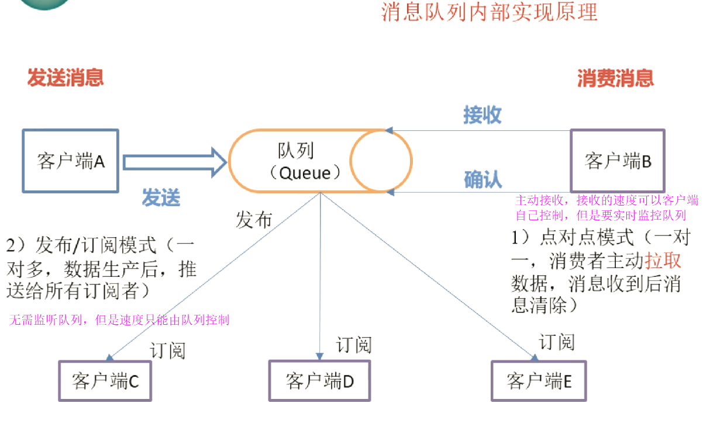
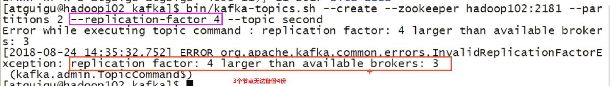
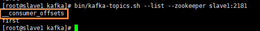
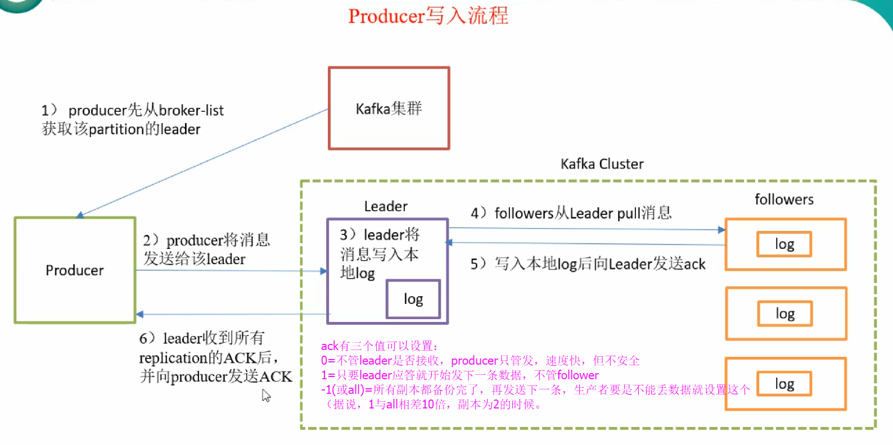
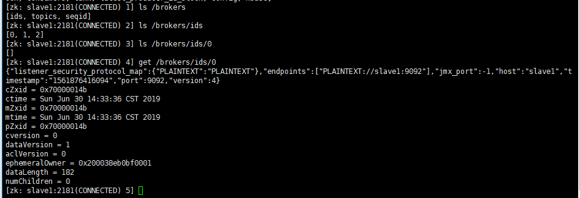
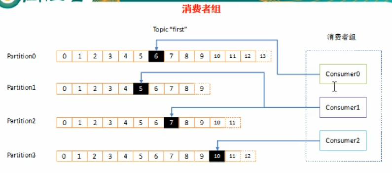
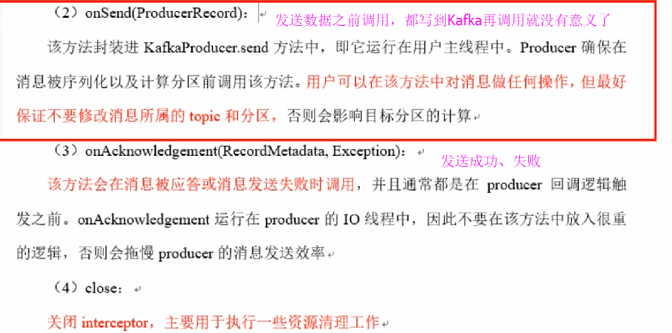
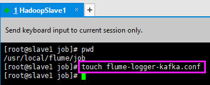

Kafka
参考：尚硅谷
制作人：小邹[yw_forgit@163.com]
版本：2.3.0、0.11.0.2
1、Kafka概述
消息队列


什么是Kafka
Kafka架构
整体架构图
流程看起来很复杂，学完再来看就都能明白
单个功能描述
2、Kafka集群部署
Kafka需要zk集群的基础。
下载安装
去官网下载，当前最新是2.3.0，注意对应着Scala的两个不同的版本
上传压缩包到三台机器上，并且解压缩
改一下名称
配置文件
进入kafka目录，创建logs文件夹，除了日志，数据也是放这目录存放的。
看下配置文件
编辑server.properties

broker.id
修改broker.id ，三台的机子的id要唯一
log.dirs
改log.dirs属性，即数据、日志存放的地方，默认是/tmp/kafka-logs，这是临时目录，改为上面创建的logs文件夹的目录。
瞄一眼两个配置
zookeeper.connect
找到zookeeper.connect=localhost:2181，修改为自己的zk集群。slaveX是在/etc/hosts文件映射过的
delete.topic.enable
配上delete.topic.enable=true，否则删除主题之后，又新建该主题名，会提示主题已存在。（我以为配置文件没有该属性就不需要配置了，结果还是要）
看一眼bin的文件，框出来的都是常用的，xxx-console-xxx.sh是测试用的
启动Zookeeper集群
启动Kafka集群
[root@slave1 kafka]#
bin/kafka-server-start.sh config/server.properties
这是前台进程，会一直输出日志，如下图，如果需要写脚本就要到-damon参数，后台守护启动
报错问题
写zk集群时，逗号写成了分号
然后在slave3启动kafka就报错了，其他两台不报错
重新开三个窗口，查看Kafka的进程
生产环境中，可能会有很多人用集群，所以要记录下自己的集群的id。jps -l 是显示包名
关闭集群
命令行简单操作
创建topic
随便用slave1（bin下的sh脚本可以用任意一台节点来运行，后续不再提示）来创建topic
|
bin/kafka-topics.sh --create --zookeeper slave1:2181 --partitions 2
--replication-factor 2 --topic first
|
显示topic
|
bin/kafka-topics.sh --list --zookeeper slave1:2181
|
查看文件情况，可以看到slave2上有first这topic的两个分区，slave1、slave3分别有不同分区的副本
注意点，副本数不能超过集群的节点数

发送、接收消息
启动生产者（随便找台节点，可在任意一台节点启动，后续不再提示），注意端口号是9092，这是连接Kafka集群，下图已经启动，> 后面可以直接跟消息内容了，回车表示发送
|
bin/kafka-console-producer.sh --broker-list slave1:9092 --topic first
|
启动消费者（随便找台节点，可在任意一台节点启动，后续不再提示），注意新版本的消费者只能连接Kafka集群（--bootstrap-server
+集群节点）进行消费，不能连接zk（--zookeeper +集群节点）集群进行消费了
|
bin/kafka-console-consumer.sh --bootstrap-server slave1:9092 --topic
first
|
发送、接收消息
多发一个，顺便提示一下，生产者生产消息敲错了，想删除要按Ctrl+Backspace
默认只能接收最新的消息，即消费者要在消息生产之前就监听着，当然加 --from-beginning 参数就能消费以前的消息。如下图，重新起一个消费者
Kafka集群维护offset在集群本地
新版的Kafka的消费者直接跟Kafka集群交互，不再通过zk来交互，减少消耗（Kafka就不用另起线程维护offset到zk集群了），offset（消息消费到哪里了）就直接在Kafka集群本地维护。
连接Kafka集群消费过消息之后，topic就多了一个offset，这就是Kafka集群本地维护的offset，Kafka保存数据都是通过topic来保存的。

查看topic详情
|
bin/kafka-topics.sh --zookeeper slave1:2181 --describe --topic first
|
|
Topic:first（名称） PartitionCount:2（分区数） ReplicationFactor:2（副本数） Configs:（具体配置详情）
Topic: first Partition: 0（0分区） Leader: 0（0分区的leader是broker.id=0的主机，即slave1） Replicas: 0,1（0分区的副本在slave1、slave2） Isr: 0,1（跟副本一样，leader挂了选择leader用）
Topic: first Partition: 1 Leader:
1 Replicas: 1,2 Isr: 1,2
|
对照这个看
Isr的作用：
follower会自己拉取数据备份，但是拉取数据有快慢，谁的数据跟leader最接近，就排前面，leader挂了就顶他上去。
删除topic
|
bin/kafka-topics.sh
--delete --zookeeper slave1:2181 --topic first
|
又新创建一个first主题，如果没有配置delete.topic.enable=true，就会出现这样的
|
bin/kafka-topics.sh
--create --zookeeper slave1:2181 --partitions 1 --replication-factor 3
--topic first
|
重新配置delete.topic.enable=true，重启集群之后，需要重新删除一遍first主题（不知道为什么用原来的xshell窗口也是无效，换一个xshell窗口就行了）
重新创建，一个分区、3个副本
bin/kafka-topics.sh
--create --zookeeper slave1:2181 --partitions 1 --replication-factor 3 --topic
first
3、Kafka工作流程分析

Kafka生产过程分析
写入方式

分区（Partition）
副本（Replication）

写入流程
Producer写入消息流程如下：

Broker保存消息
存储方式
给first主题发送数据
查看数据文件
存储策略
数据在Zookeeper的存储结构
连上zk集群查看

主要是两条线
Kafka消费过程分析
Kafka提供了两套consumerAPI：高级ConsumerAPI和低级ConsumerAPI。（注意不是新旧版本的API，console用的是低级API，公司一般也是用低级的）
高级API
优点
缺点
可以通过重新给消费者换一个组实现重复消费
低级API
优点
缺点
消费者组

消费方式
消费者组案例
测试同一个消费者组中的消费者，同一时刻只能有一个消费者消费。
修改config/consumer.properties文件，默认group.id=test-consumer-group，就用这个测试
不指定group.id（即启动消费者不带配置文件），默认会给每个消费者随机生成一个。
带consumer.properties配置文件启动一个组的两个消费者
|
bin/kafka-console-consumer.sh --bootstrap-server slave1:9092 --topic
first --consumer.config config/consumer.properties
|
生产者发送一个消息，只看到一个消费者消费了（当然是轮着消费的）
杀死其中一个

4、Kafka API实战
Kafka生产者Java API
生产者没有高级、低级API之分。
创建生产者（带回调）
代码
pom.xml
|
<?xml version="1.0" encoding="UTF-8"?>
<project xmlns="http://maven.apache.org/POM/4.0.0"
xmlns:xsi="http://www.w3.org/2001/XMLSchema-instance"
xsi:schemaLocation="http://maven.apache.org/POM/4.0.0
http://maven.apache.org/xsd/maven-4.0.0.xsd">
<modelVersion>4.0.0</modelVersion>
<groupId>com.ywforwhat</groupId>
<artifactId>02_Kafka</artifactId>
<version>1.0-SNAPSHOT</version>
<dependencies>
<dependency>
<groupId>org.apache.kafka</groupId>
<artifactId>kafka-clients</artifactId>
<version>2.3.0</version>
</dependency>
<dependency>
<groupId>org.apache.kafka</groupId>
<!-- 2.12是Scala的版本，后面2.3.0才是Kafka的版本 -->
<artifactId>kafka_2.12</artifactId>
<version>2.3.0</version>
</dependency>
</dependencies>
</project>
|
CustomerProducer
package producer;
import org.apache.kafka.clients.producer.*;
import org.apache.kafka.common.serialization.StringSerializer;
import java.util.Properties;
/**
* Created by yw_forWork on 2019/7/1.
*/
public class CustomerProducer {
public static void main(String[] args) {
// 配置信息
Properties properties = new Properties();
// Kafka集群
properties.put("bootstrap.servers", "slave1:9092");
// 应答级别。acks=-1(all)、0、1
//properties.put("acks", "all"); // all或者-1
// ProducerConfig有Producer的所有属性，ProducerConfig.ACKS_CONFIG=acks
properties.put(ProducerConfig.ACKS_CONFIG, "all");
// 重试次数
properties.put("retries", 0);
// >> 满足这两个条件之一才发送数据，先存起来
// 发送一条数据的缓存大小
properties.put("batch.size", 16384); // 16K
// 提交延迟（不会立马提交）
properties.put("linger.ms", 1);
// 整个Producer的缓存
properties.put("buffer.memory", 33554432);
// Key的序列化类
properties.put("key.serializer", "org.apache.kafka.common.serialization.StringSerializer");
// Value的序列化类
properties.put("value.serializer", "org.apache.kafka.common.serialization.StringSerializer");
// 创建生产者对象。 泛型是数据的k、v类型
KafkaProducer<String, String> producer = new KafkaProducer<String, String>(properties);
// 循环发送数据
for (int i=0; i<5; i++) { // i<10
// 将变量i的值作为数据，发送到first（一个分区，3个备份）。 没有回调
//producer.send(new ProducerRecord<String, String>("first", String.valueOf(i)));
// 发送完毕有回调。topic为first（一个分区，3个备份），topic改为second（3个分区，2个备份）可以测试轮询分区进行消费
producer.send(new ProducerRecord<String, String>("first", String.valueOf(i)), new Callback() { // second
public void onCompletion(RecordMetadata recordMetadata, Exception e) {
// Exception为空表示发送成功
if(e == null) {
// 打印消费的分区、偏移量
System.out.println("partition=" + recordMetadata.partition() + "--offset" + recordMetadata.offset());
} else {
System.out.println("发送失败");
}
}
});
}
producer.close();
}
} |
测试
起一个消费者
跑起程序，由于first主题只有一个分区，故就一直都是0，offset由于有测试数据了，故不是从0开始
消费者打印，看紫色部分，其他是别的测试数据
新创建一个topic，second有3个分区，2个副本
|
bin/kafka-topics.sh
--zookeeper slave1:2181 --create --topic second --partitions 3
--replication-factor 2
|
稍微改一下代码，把topic参数由first改为second，for循环改为10（数据多一点）
运行程序，second有3个分区，可以看到下图是轮询3个分区消费数据的
再看监听的消费者所获取的数据，不是从0-9的，而是先把一个分区的所有数据都拉回来，再拉下一个分区的数据。
自定义分区生产者
代码
pom.xml文件不变
CustomerProducer 跟前面的差不多，除了 指定自定义分区的类名 之外，数据放second
package producer;
import org.apache.kafka.clients.producer.*;
import org.apache.kafka.common.serialization.StringSerializer;
import java.util.Properties;
/**
* Created by yw_forWork on 2019/7/1.
*/
public class CustomerProducer {
public static void main(String[] args) {
// 配置信息
Properties properties = new Properties();
// Kafka集群
properties.put("bootstrap.servers", "slave1:9092");
// 应答级别。acks=-1(all)、0、1
//properties.put("acks", "all"); // all或者-1
// ProducerConfig有Producer的所有属性，ProducerConfig.ACKS_CONFIG=acks
properties.put(ProducerConfig.ACKS_CONFIG, "all");
// 重试次数
properties.put("retries", 0);
// >> 满足这两个条件之一才发送数据，先存起来
// 发送一条数据的缓存大小
properties.put("batch.size", 16384); // 16K
// 提交延迟（不会立马提交）
properties.put("linger.ms", 1);
// 整个Producer的缓存
properties.put("buffer.memory", 33554432);
// Key的序列化类
properties.put("key.serializer", "org.apache.kafka.common.serialization.StringSerializer");
// Value的序列化类
properties.put("value.serializer", "org.apache.kafka.common.serialization.StringSerializer");
// 指定自定义分区的类名
properties.put("partitioner.class", "producer.CustomerPartitioner");
// 创建生产者对象。 泛型是数据的k、v类型
KafkaProducer<String, String> producer = new KafkaProducer<String, String>(properties);
// 循环发送数据
for (int i=0; i<5; i++) { // i<5 i<10
// 将变量i的值作为数据，发送到first（一个分区，3个备份）。 没有回调
//producer.send(new ProducerRecord<String, String>("first", String.valueOf(i)));
// 发送完毕有回调。topic为first（一个分区，3个备份），topic改为second（3个分区，2个备份）可以测试轮询分区进行消费
producer.send(new ProducerRecord<String, String>("second", String.valueOf(i)), new Callback() { // first second
public void onCompletion(RecordMetadata recordMetadata, Exception e) {
// Exception为空表示发送成功
if(e == null) {
// 打印消费的分区、偏移量
System.out.println("partition=" + recordMetadata.partition() + "--offset" + recordMetadata.offset());
} else {
System.out.println("发送失败");
}
}
});
}
producer.close();
}
}
|
CustomerPartitioner
package producer;
import org.apache.kafka.clients.producer.Partitioner;
import org.apache.kafka.common.Cluster;
import java.util.Map;
/**
* 自定义分区类
* Created by yw_forWork on 2019/7/1.
*/
public class CustomerPartitioner implements Partitioner {
private Map configMap = null;
public int partition(String topic, Object key, byte[] keyBytes, Object o1, byte[] valueBytes, Cluster cluster) {
// 实际做分区就是拿到这些参数做hash等，然后模于分区数就可以
return 0; // 这里返回0，即数据都放0分区
}
public void close() {
}
/**
* 该方法一般在partition分区方法需要用到配置的时候，这样子用的，虽然configure方法也可以设置分区。
* @param configs
*/
public void configure(Map<String, ?> configs) {
configMap = configs;
}
}
|
测试
运行程序，topic为second有3个分区，本来是要轮询分区的，现在都是0分区了
消费的值也是按顺序了
Kafka消费者Java API
高级API
代码
pom.xml文件不变
CustomerConsumer
package consumer;
import org.apache.kafka.clients.consumer.ConsumerConfig;
import org.apache.kafka.clients.consumer.ConsumerRecord;
import org.apache.kafka.clients.consumer.ConsumerRecords;
import org.apache.kafka.clients.consumer.KafkaConsumer;
import org.apache.kafka.clients.producer.ProducerConfig;
import java.time.Duration;
import java.util.Arrays;
import java.util.Collections;
import java.util.Properties;
/**
* Created by yw_forWork on 2019/7/1.
*/
public class CustomerConsumer {
public static void main(String[] args) {
Properties properties = new Properties();
// >>消费者的所有配置都在ConsumerConfig
// Kafka集群
properties.put(ConsumerConfig.BOOTSTRAP_SERVERS_CONFIG, "slave1:9092"); // 即bootstrap.servers
// 消费者组id
properties.put("group.id", "test");
// 设置自动提交offset
properties.put("enable.auto.commit", "true");
// 提交延时。从topic拿到数据之后，过了多久才提交offset。正常流程是：消费数据 -- 业务处理 -- 提交offset，假如提交数据之前挂了，重启之后，
// 就会重复消费，因为这个offset没有提交返回给Kafka，所以这里一般用低级API管理，在处理完数据之后，才提交offset，保证数据与offset一致。
properties.put("auto.commit.interval.ms", "1000");
// Key的反序列化类
properties.put("key.deserializer", "org.apache.kafka.common.serialization.StringDeserializer");
// Value的反序列化类
properties.put("value.deserializer", "org.apache.kafka.common.serialization.StringDeserializer");
// 创建消费者对象
KafkaConsumer<String, String> consumer = new KafkaConsumer<String, String>(properties);
// 单个topic
//consumer.subscribe(Collections.singletonList("second"));
// 指定Topic。多个topic，哪怕topic不存在也没有影响
consumer.subscribe(Arrays.asList("second", "first", "third"));
// 一直接收，测试而已
while (true) {
// 隔多久主动拉取数据
ConsumerRecords<String, String> consumerRecords = consumer.poll(Duration.ofMillis(100)); // 100ms
for (ConsumerRecord<String, String> record : consumerRecords) {
System.out.println("topic=" + record.topic() + " - partition=" + record.partition() + " - dataValue=" + record.value());
}
}
}
} |
测试
先运行代码程序
命令行启动生产者，发送消息到first
命令行启动另一个生产者，发送消息到second
然后就能看到消费的结果了，这里注意一下，多次启动代码程序而不关闭，消费者会轮询消费，导致这里“helloyw”这信息没有在下图打印出来，而在另一个控制台打印，表面感觉好像不会消费一样，注意哦
注意点
以及
低级API
方法都是自定义的
findNewLeader()：
第一次找主副本的时候，把三个副本记下来，如果leader挂了，就直接从其他俩选出一个leader，就不用重新从众多集群中找了，但本教程没有实现。
本教程用的是2.3.0，这个版本实在是太新了，很少资料，而且我看了官网也没有看到操作API的官方案例，而且现在最新版已经没有这个低级API了，无奈之下，就回退到kafka_2.11-0.11.0.2（与原教程一样）版本吧
代码
新建一个工程，因为Kafka的版本不一样
pom.xml
<?xml version="1.0" encoding="UTF-8"?>
<project xmlns="http://maven.apache.org/POM/4.0.0"
xmlns:xsi="http://www.w3.org/2001/XMLSchema-instance"
xsi:schemaLocation="http://maven.apache.org/POM/4.0.0 http://maven.apache.org/xsd/maven-4.0.0.xsd">
<modelVersion>4.0.0</modelVersion>
<groupId>com.ywforwhat</groupId>
<artifactId>02_Kafka_0.11.0.2</artifactId>
<version>1.0-SNAPSHOT</version>
<dependencies>
<dependency>
<groupId>org.apache.kafka</groupId>
<artifactId>kafka-clients</artifactId>
<version>0.11.0.2</version>
</dependency>
<dependency>
<groupId>org.apache.kafka</groupId>
<!-- 2.11是Scala的版本，后面0.11.0.2才是Kafka的版本 -->
<!-- 0.11.0.2 -->
<artifactId>kafka_2.11</artifactId>
<version>0.11.0.2</version>
</dependency>
</dependencies>
</project>
|
LowerConsumer
package consumer;
import kafka.api.FetchRequest;
import kafka.api.FetchRequestBuilder;
import kafka.cluster.BrokerEndPoint;
import kafka.javaapi.*;
import kafka.javaapi.consumer.SimpleConsumer;
import kafka.javaapi.message.ByteBufferMessageSet;
import kafka.message.MessageAndOffset;
import java.nio.ByteBuffer;
import java.util.ArrayList;
import java.util.Collections;
import java.util.List;
/**
* 该类用的Kafka版本为kafka_2.11-0.11.0.2
* Created by yw_forWork on 2019/7/1.
*/
public class LowerConsumer {
public static void main(String[] args) {
// 定义相关参数
ArrayList<String> brokers = new ArrayList<String>(); // Kafka集群
brokers.add("slave1");
brokers.add("slave2");
brokers.add("slave3");
// 端口
int port = 9092;
// 主题
String topic = "second";
// 分区
int partition = 0;
// offset
long offset = 2;
LowerConsumer lowerConsumer = new LowerConsumer();
lowerConsumer.getData(brokers, port, topic, partition, offset);
}
// 找分区leader
private BrokerEndPoint findLeader(List<String> brokers, int port, String topic, int partition) {
for(String broker : brokers) {
// 创建获取分区leader的消费者对象。1000是超时时间，1024 * 4是缓冲区大小，getLeader是为该消费者取一个名字而已
SimpleConsumer getLeader = new SimpleConsumer(broker, port, 1000, 1024 * 4, "getLeader");
// 创建一个主题元数据信息请求。找topic -- 找分区 -- 找leader
TopicMetadataRequest topicMetadataRequest = new TopicMetadataRequest(Collections.singletonList(topic));
// 获取主题元数据返回值
TopicMetadataResponse topicMetadataResponse = getLeader.send(topicMetadataRequest);
// 解析元数据返回值。上面传递多个topic，这里就会返回多个topic的元数据
List<TopicMetadata> topicMetadataList = topicMetadataResponse.topicsMetadata();
// 遍历主题元数据。 主题元数据信息topicMetadata
for(TopicMetadata topicMetadata : topicMetadataList) {
// 获取多个分区的元数据信息
List<PartitionMetadata> partitionMetadataList = topicMetadata.partitionsMetadata();
// 遍历分区元数据
for (PartitionMetadata partitionMetadata : partitionMetadataList) {
// 获取指定分区的leader
if(partitionMetadata.partitionId() == partition) {
// 返回该分区的leader
return partitionMetadata.leader();
}
}
}
}
return null;
}
// 获取数据
private void getData(List<String> brokers, int port, String topic, int partition, long offset) {
BrokerEndPoint leader = findLeader(brokers, port, topic, partition);
if(leader == null) {
return;
}
String leaderHost = leader.host();
// 获取数据的消费者对象
SimpleConsumer getData = new SimpleConsumer(leaderHost, port, 1000, 1024 * 4, "getData");
// 创建获取数据的对象。 100=一次抓取数据的缓存大小，不是数据的条数
FetchRequest fetchRequest = new FetchRequestBuilder().addFetch(topic, partition, offset, 100).build(); // 可以多次调用addFetch传递多个topic
// 获取数据返回值
FetchResponse fetchResponse = getData.fetch(fetchRequest);
// 解析返回值，解析的时候再传具体的topic进行解析
ByteBufferMessageSet messageAndOffsets = fetchResponse.messageSet(topic, partition);
for(MessageAndOffset messageAndOffset : messageAndOffsets) {
long offset1 = messageAndOffset.offset();
ByteBuffer payload = messageAndOffset.message().payload();
// 模仿反序列化过程
byte[] bytes = new byte[payload.limit()];
payload.get(bytes);
System.out.println("offset=" + offset1 + " -- data=" + new String(bytes));
}
}
} |
测试
不管运行多少次，都是只消费分区为2、offset=2这条数据，这就是指定topic、partition、offset读取数据
5、Kafka Producer拦截器
注意是生产者的拦截器。
拦截器原理

拦截器案例
这样可以与逻辑分开，形成一个拦截器链来操作，统计这些就不属于主逻辑。
代码
pom.xml
<?xml version="1.0" encoding="UTF-8"?>
<project xmlns="http://maven.apache.org/POM/4.0.0"
xmlns:xsi="http://www.w3.org/2001/XMLSchema-instance"
xsi:schemaLocation="http://maven.apache.org/POM/4.0.0 http://maven.apache.org/xsd/maven-4.0.0.xsd">
<modelVersion>4.0.0</modelVersion>
<groupId>com.ywforwhat</groupId>
<artifactId>02_Kafka</artifactId>
<version>1.0-SNAPSHOT</version>
<dependencies>
<dependency>
<groupId>org.apache.kafka</groupId>
<artifactId>kafka-clients</artifactId>
<version>2.3.0</version>
</dependency>
<dependency>
<groupId>org.apache.kafka</groupId>
<!-- 2.12是Scala的版本，后面2.3.0才是Kafka的版本 -->
<artifactId>kafka_2.12</artifactId>
<version>2.3.0</version>
</dependency>
</dependencies>
</project>
|
TimeIntercetor
package interceptor;
import org.apache.kafka.clients.producer.ProducerInterceptor;
import org.apache.kafka.clients.producer.ProducerRecord;
import org.apache.kafka.clients.producer.RecordMetadata;
import java.util.Map;
/**
* Created by yw_forWork on 2019/7/2.
*/
public class TimeIntercetor implements ProducerInterceptor<String, String> {
public ProducerRecord<String, String> onSend(ProducerRecord<String, String> producerRecord) {
// 其他都不变，就只改变一下value的值为System.currentTimeMillis() + "," + producerRecord.value()
return new ProducerRecord<String, String>(producerRecord.topic(), producerRecord.key(), System.currentTimeMillis() + "," + producerRecord.value());
}
public void onAcknowledgement(RecordMetadata recordMetadata, Exception e) {
}
public void close() {
}
public void configure(Map<String, ?> map) {
}
}
|
CountIntercetor
package interceptor;
import org.apache.kafka.clients.producer.ProducerInterceptor;
import org.apache.kafka.clients.producer.ProducerRecord;
import org.apache.kafka.clients.producer.RecordMetadata;
import java.util.Map;
/**
* Created by yw_forWork on 2019/7/2.
*/
public class CountIntercetor implements ProducerInterceptor<String, String> {
// 成功、失败的次数
private int successCount = 0;
private int errorCount = 0;
// 每条数据过来都会调用一次
public ProducerRecord<String, String> onSend(ProducerRecord<String, String> producerRecord) {
// 不对数据进行处理，故要原封不动返回，而不是返回null
return producerRecord;
}
// 每条数据过来都会调用一次
public void onAcknowledgement(RecordMetadata recordMetadata, Exception e) {
if(e == null) {
successCount ++;
} else {
errorCount ++;
}
}
// 生产完消息之后，就调用
public void close() {
System.out.println("发送成功：" + successCount + " 条");
System.out.println("发送失败：" + errorCount + " 条");
}
public void configure(Map<String, ?> map) {
}
} |
CustomerProducer
package producer;
import org.apache.kafka.clients.producer.*;
import java.util.ArrayList;
import java.util.Properties;
/**
* Created by yw_forWork on 2019/7/1.
*/
public class CustomerProducer {
public static void main(String[] args) {
// 配置信息
Properties properties = new Properties();
// Kafka集群
properties.put("bootstrap.servers", "slave1:9092");
// 应答级别。acks=-1(all)、0、1
//properties.put("acks", "all"); // all或者-1
// ProducerConfig有Producer的所有属性，ProducerConfig.ACKS_CONFIG=acks
properties.put(ProducerConfig.ACKS_CONFIG, "all");
// 重试次数
properties.put("retries", 0);
// >> 满足这两个条件之一才发送数据，先存起来
// 发送一条数据的缓存大小
properties.put("batch.size", 16384); // 16K
// 提交延迟（不会立马提交）
properties.put("linger.ms", 1);
// 整个Producer的缓存
properties.put("buffer.memory", 33554432);
// Key的序列化类
properties.put("key.serializer", "org.apache.kafka.common.serialization.StringSerializer");
// Value的序列化类
properties.put("value.serializer", "org.apache.kafka.common.serialization.StringSerializer");
// 指定自定义分区的类名，不需要则注释即可
//properties.put("partitioner.class", "producer.CustomerPartitioner");
// 拦截器类，不需要则注释即可
ArrayList<String> list = new ArrayList<String>();
// 谁先添加就先执行谁
list.add("interceptor.TimeIntercetor");
list.add("interceptor.CountIntercetor");
properties.put(ProducerConfig.INTERCEPTOR_CLASSES_CONFIG, list);
// 创建生产者对象。 泛型是数据的k、v类型
KafkaProducer<String, String> producer = new KafkaProducer<String, String>(properties);
// 循环发送数据
for (int i=0; i<5; i++) { // i<5 i<10
// 将变量i的值作为数据，发送到first（一个分区，3个备份）。 没有回调
//producer.send(new ProducerRecord<String, String>("first", String.valueOf(i)));
// 发送完毕有回调。topic为first（一个分区，3个备份），topic改为second（3个分区，2个备份）可以测试轮询分区进行消费
producer.send(new ProducerRecord<String, String>("second", String.valueOf(i)), new Callback() { // first second
public void onCompletion(RecordMetadata recordMetadata, Exception e) {
// Exception为空表示发送成功
if(e == null) {
// 打印消费的分区、偏移量
System.out.println("partition=" + recordMetadata.partition() + "--offset" + recordMetadata.offset());
} else {
System.out.println("发送失败");
}
}
});
}
producer.close();
}
} |
注意
测试
先起一个消费者
运行CustomerProducer 可以看到统计数
就可以看到数据前面加了时间戳
6、Kafka Streams
Kafka的流式处理Streams没有Spark厉害
Kafka Streams

Kafka Streams特点
为什么要有Kafka Streams
Kafka Streams数据清洗案例
实时处理单词带有“>>>”前缀的内容，例如输入“atguigu>>>ximenqing”，最终处理为“ximenqing”。
依赖
<dependency>
<groupId>org.apache.kafka</groupId>
<artifactId>kafka-streams</artifactId>
<version>0.11.0.2</version>
</dependency> |
代码
版本用0.11.0.2
pom.xml
<?xml version="1.0" encoding="UTF-8"?>
<project xmlns="http://maven.apache.org/POM/4.0.0"
xmlns:xsi="http://www.w3.org/2001/XMLSchema-instance"
xsi:schemaLocation="http://maven.apache.org/POM/4.0.0 http://maven.apache.org/xsd/maven-4.0.0.xsd">
<modelVersion>4.0.0</modelVersion>
<groupId>com.ywforwhat</groupId>
<artifactId>02_Kafka_0.11.0.2</artifactId>
<version>1.0-SNAPSHOT</version>
<dependencies>
<dependency>
<groupId>org.apache.kafka</groupId>
<artifactId>kafka-clients</artifactId>
<version>0.11.0.2</version>
</dependency>
<dependency>
<groupId>org.apache.kafka</groupId>
<!-- 2.11是Scala的版本，后面0.11.0.2才是Kafka的版本 -->
<!-- 0.11.0.2 -->
<artifactId>kafka_2.11</artifactId>
<version>0.11.0.2</version>
</dependency>
<dependency>
<groupId>org.apache.kafka</groupId>
<artifactId>kafka-streams</artifactId>
<version>0.11.0.2</version>
</dependency>
</dependencies>
</project>
|
KafkaStream
package Streams;
import org.apache.kafka.streams.KafkaStreams;
import org.apache.kafka.streams.processor.Processor;
import org.apache.kafka.streams.processor.ProcessorSupplier;
import org.apache.kafka.streams.processor.TopologyBuilder;
import java.util.Properties;
/**
* Created by yw_forWork on 2019/7/3.
*/
public class KafkaStream {
public static void main(String[] args) {
// 创建拓扑对象
TopologyBuilder builder = new TopologyBuilder();
// 创建配置文件
Properties properties = new Properties();
properties.put("bootstrap.servers", "slave1:9092");
properties.put("application.id", "kafkaStream");
// >> 构建拓扑结构
// 数据源在topic first，即从first拿数据来清洗。 参数：name, topics
builder.addSource("SOURCE", "first")
// 参数：name,supplier,parentNames=上面的SOURCE
.addProcessor("PROCESSOR", new ProcessorSupplier() {
public Processor get() {
// 数据进来是经过序列化的，但是到了这里没有经过反序列化（消费的时候才有），故LogProcessor的泛型类型用byte
return new LogProcessor(){};
}
}, "SOURCE")
// 清洗完放入second。 参数名称：name,topic,parentNames
.addSink("SINK", "second", "PROCESSOR");
KafkaStreams kafkaStreams = new KafkaStreams(builder, properties);
kafkaStreams.start();
}
} |
LogProcessor
package Streams;
import org.apache.kafka.streams.processor.Processor;
import org.apache.kafka.streams.processor.ProcessorContext;
/**
* Created by yw_forWork on 2019/7/3.
*/
public class LogProcessor implements Processor<byte[], byte[]> {
private ProcessorContext context;
public void init(ProcessorContext processorContext) {
// 上下文环境
context = processorContext;
}
// 参数分别是Key、Value
public void process(byte[] bytes, byte[] bytes2) {
// 获取一行数据。反序列化
String line = new String(bytes2);
// 去除“>>>”
line = line.replaceAll(">>>", "");
// 序列化
bytes2 = line.getBytes();
// 把数据写出去
context.forward(bytes, bytes2);
}
public void punctuate(long l) {
}
public void close() {
}
}
|
测试
启动
生产者发送数据之后，消费者就能直接消费清洗过的数据。代码实现与清洗案例的图有点出入，即“ximenqing”，只是没有把前面的字符串去掉而已。
太复杂的操作Kafka做不了，但是清洗还是可以的。
7、扩展
Kafka与Flume比较
Flume与Kafka集成
流程：日志文件 --> Flume --> Kafka。
Flume的使用参考Flume教程。
配置Flume
看下Flume官网的文档，Kafka作为Flume的Sink
使用slave1主机创建flume-logger-kafka.conf（job目录是自己创建的）

编辑
|
# >> Agent
a1.sources = r1
a1.sinks = k1
a1.channels = c1
# >> Source。使用tail命令监听日志文件
a1.sources.r1.type = exec
a1.sources.r1.command = tail -F -c +0 /usr/local/flume/flume_kafka.log
a1.sources.r1.shell = /bin/bash -c
# >> Sink。直接复制官网案例改
a1.sinks.k1.type = org.apache.flume.sink.kafka.KafkaSink
# 数据传输给Kafka的first主题
a1.sinks.k1.kafka.topic = first
# Kafka的集群
a1.sinks.k1.kafka.bootstrap.servers = slave1:9092,slave2:9092,slave3:9092
a1.sinks.k1.kafka.flumeBatchSize = 20
a1.sinks.k1.kafka.producer.acks = 1
a1.sinks.k1.kafka.producer.linger.ms = 1
# >> channel的内存
# a1的channel类型是memory内存型
a1.channels.c1.type = memory
# a1的channel总容量1000个event
a1.channels.c1.capacity = 1000
# a1的channel传输时收集到了100条event以后再去提交事务
a1.channels.c1.transactionCapacity = 100
# >> 拓扑结构
# put过程。
a1.sources.r1.channels = c1
# take过程。
a1.sinks.k1.channel = c1
|
启动Flume任务（命令可以简写）
保证zk、Kafka集群都启动了
启动一个消费者
监听first主题
测试
创建日志文件，模拟日志生成

追加日志（其他都是测试的）
消费者很快就能消费
公司实际应用就是这样子，日志文件有了新的数据，就直接通过Flume给到Kafka，然后实时被消费者消费。